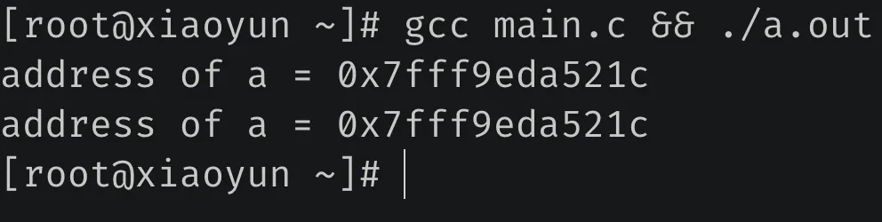
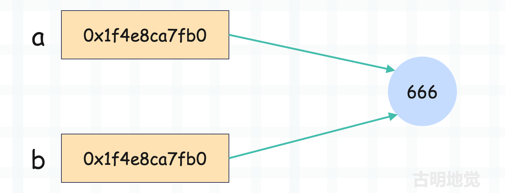

Python 中一切皆对象
在学习 Python 的时候，你肯定听过这么一句话：Python 中一切皆对象。没错，在 Python 世界里，一切都是对象。整数是一个对象、字符串是一个对象、字典是一个对象，甚至 int, str, list 以及我们使用 class 关键字自定义的类，它们也是对象。
像 int, str, list 等基本类型，以及自定义的类，由于它们可以表示类型，因此我们称之为类型对象；类型对象实例化得到的对象，我们称之为实例对象。但不管是哪种对象，它们都属于对象。因此 Python 将面向对象理念贯彻的非常彻底，面向对象中的类和对象在 Python 中都是通过对象实现的。
在面向对象理论中，存在着类和对象两个概念，像 int、dict、tuple、以及使用 class 关键字自定义的类型对象实现了面向对象理论中类的概念，而 123、3.14、"string" 等实例对象则实现了面向对象理论中对象的概念。但在 Python 里面，面向对象中的类和对象都是通过对象实现的。
我们举个例子：
# dict 是一个类，因此它属于类型对象
# 类型对象实例化得到的对象属于实例对象
print(dict)
"""
<class 'dict'>
"""
print(dict(a=1, b=2))
"""
{'a': 1, 'b': 2}
"""
因此可以用一张图来描述面向对象在 Python 中的体现。

而如果想查看一个对象的类型，可以使用 type，或者通过对象的 __class__ 属性。
data = [1, 2, 3]
# 查看类型
print(type(data))
"""
<class 'list'>
"""
print(data.__class__)
"""
<class 'list'>
"""
如果想判断一个对象是不是指定类型的实例对象，可以使用 isinstance。
data = [1, 2, 3]
# 判断是不是指定类型的实例对象
print(isinstance(data, list))
"""
True
"""
但是问题来了，按照面向对象的理论来说，对象是由类实例化得到的，这在 Python 中也是适用的。既然是对象，那么就必定有一个类来实例化它，换句话说对象一定要有类型。至于一个对象的类型是什么，就看这个对象是被谁实例化的，被谁实例化，那么类型就是谁，比如列表的类型是 list，字典的类型是 dict 等等。
而 Python 中一切皆对象，所以像 int, str, tuple 这些内置的类对象也是具有相应的类型的，那么它们的类型又是谁呢？使用 type 查看一下就知道了。
print(type(int)) # <class 'type'>
print(type(str)) # <class 'type'>
print(type(dict)) # <class 'type'>
print(type(type)) # <class 'type'>
我们看到类型对象的类型，无一例外都是 type。而 type 我们也称其为元类，表示类型对象的类型。至于 type 本身，它的类型还是 type，所以它连自己都没放过，把自己都变成自己的对象了。
因此在 Python 中，你能看到的任何对象都是有类型的，可以使用 type 查看，也可以获取该对象的 __class__ 属性查看。所以：实例对象、类型对象、元类，Python 中任何一个对象都逃不过这三种身份。
到这里可能有人会发现一个有意思的点，我们说 int 是一个类对象，这显然是没有问题的。因为站在整数（比如 123）的角度上，int 是一个不折不扣的类对象；但如果站在 type 的角度上呢？显然我们又可以将 int 理解为实例对象，因此 class 具有二象性。
至于 type 也是同理，虽然它是元类，但本质上也是一个类对象。
注：不仅 type 是元类，那些继承了 type 的类也可以叫做元类。
然后 Python 中还有一个关键的类型（对象），叫做 object，它是所有类型对象的基类。不管是什么类，内置的类也好，我们自定义的类也罢，它们都继承自 object。因此 object 是所有类型对象的基类、或者说父类。
那如果我们想获取一个类都继承了哪些基类，该怎么做呢？方式有三种：
class A: pass
class B: pass
class C(A): pass
class D(B, C): pass
# 首先 D 继承自 B 和 C, C 又继承 A
# 我们现在要来查看 D 继承的父类
# 方法一: 使用 __base__
print(D.__base__)
"""
<class '__main__.B'>
"""
# 方法二: 使用 __bases__
print(D.__bases__)
"""
(<class '__main__.B'>, <class '__main__.C'>)
"""
# 方法三: 使用 __mro__
print(D.__mro__)
"""
(<class '__main__.D'>, <class '__main__.B'>,
<class '__main__.C'>, <class '__main__.A'>,
<class 'object'>)
"""
- __base__：如果继承了多个类，那么只显示继承的第一个类，没有显式继承则返回 <class 'object'>
- __bases__：返回一个元组，会显示所有直接继承的父类，没有显式继承则返回 (<class 'object'>,)
- __mro__: mro（Method Resolution Order）表示方法查找顺序，会从自身出发，找到最顶层的父类。因此返回自身、继承的基类、以及基类继承的基类，一直找到 object
而如果想查看某个类型是不是另一个类型的子类，可以通过 issubclass。
print(issubclass(str, object))
"""
True
"""
因此，我们可以得出以下两个结论：
- type 站在类型金字塔的最顶端，任何一个对象按照类型追根溯源，最终得到的都是 type；
- object 站在继承金字塔的最顶端，任何一个类型对象按照继承关系追根溯源，最终得到的都是 object；
但要注意的是，我们说 type 的类型还是 type，但 object 的基类则不再是 object，而是 None。
print(type.__class__) # <class 'type'>
# 注：以下打印结果容易让人产生误解
# 它表达的含义是 object 的基类为空
# 而不是说 object 继承 None
print(object.__base__) # None
但为什么 object 的基类是 None，而不是它自身呢？其实答案很简单，Python 在查找属性或方法的时候，自身如果没有的话，会按照 __mro__ 指定的顺序去基类中查找。所以继承链一定会有一个终点，否则就会像没有出口的递归一样出现死循环了。
我们用一张图将对象之间的关系总结一下：

- 实例对象的类型是类型对象，类型对象的类型是元类；
- 所有类型对象的基类都收敛于 object；
- 所有对象的类型都收敛于 type；
因此 Python 算是将一切皆对象的理念贯彻到了极致，也正因为如此，Python 才具有如此优秀的动态特性。
但是还没结束，我们再重新审视一下上面那张图，会发现里面有两个箭头看起来非常的奇怪。object 的类型是 type，type 又继承了 object。
print(type.__base__) # <class 'object'>
print(object.__class__) # <class 'type'>
因为 type 是所有类的元类，而 object 是所有类的基类，这就说明 type 要继承自 object，而 object 的类型是 type。很多人都会对这一点感到奇怪，这难道不是一个先有鸡还是先有蛋的问题吗？答案不是的，这两个对象是共存的，它们之间的定义是互相依赖的。而具体是怎么一回事，我们后续分析。
变量其实是指针
Python 的变量只是一个名字，如果站在 C 语言的角度来看，那么就是一个指针。所以 Python 的变量保存的其实是对象的内存地址，或者说指针，而指针指向的内存存储的才是对象。
所以在 Python 中，我们都说变量指向了某个对象。在其它静态语言中，变量相当于是为某块内存起的别名，获取变量等于获取这块内存所存储的值。而 Python 中变量代表的内存所存储的不是对象，而是对象的指针（或者说引用）。
我们举例说明，看一段 C 代码。
#include <stdio.h>
void main()
{
int a = 666;
printf("address of a = %p\n", &a);
a = 667;
printf("address of a = %p\n", &a);
}
编译执行一下：

赋值前后地址都是 0x7fff9eda521c，没有变化，再来看一段 Python 代码。
a = 666
print(hex(id(a))) # 0x7febf803a3d0
a = 667
print(hex(id(a))) # 0x7fec180677b0
我们看到 Python 里面输出的地址发生了变化，下面分析一下原因。
首先在 C 中，创建一个变量的时候必须规定好类型，比如 int a = 666，那么变量 a 就是 int 类型，以后在所处的作用域中就不可以变了。如果这时候再设置 a = 777，那么等于是把内存中存储的 666 换成 777，a 的地址和类型是不会变化的。
而在 Python 中，a = 666 等于是先开辟一块内存，存储的值为 666，然后让变量 a 指向这片内存，或者说让变量 a 保存这块内存的地址。然后 a = 777 的时候，再开辟一块内存，然后让 a 指向存储 777 的内存，由于是两块不同的内存，所以它们的地址是不一样的。

所以 Python 的变量只是一个和对象关联的名字，它代表的是对象的指针。换句话说 Python 的变量就是个便利贴，可以贴在任何对象上，一旦贴上去了，就代表这个对象被引用了。
值传递？引用传递？
再来看看变量之间的传递，在 Python 中是如何体现的。
a = 666
print(hex(id(a))) # 0x1f4e8ca7fb0
b = a
print(hex(id(b))) # 0x1f4e8ca7fb0
我们看到打印的地址是一样的，再用一张图解释一下。

a = 666 的时候，先开辟一份内存，再让 a 存储对应内存的地址；然后 b = a 的时候，会把 a 拷贝一份给 b，所以 b 和 a 存储了相同的地址，它们都指向了同一个对象。
因此说 Python 是值传递、或者引用传递都是不准确的，准确的说 Python 是变量的值传递，对象的引用传递。因为 Python 的变量可以认为是 C 的一个指针，在 b = a 的时候，等于把 a 指向的对象的地址（a 本身）拷贝一份给 b，所以对于变量来说是值传递；然后 a 和 b 又都是指向对象的指针，因此对于对象来说是引用传递。
在这个过程中，对象没有重复创建，它只是多了一个引用。
另外还有最关键的一点，Python 的变量是一个指针，当传递变量的时候，传递的是指针；但是在操作变量的时候，会操作变量指向的内存。所以 id(a) 获取的不是 a 的地址，而是 a 指向的内存的地址（在底层其实就是 a 本身）；同理 b = a，是将 a 本身，或者说将 a 存储的、指向某个具体的对象的地址传递给了 b。
另外在 C 的层面，显然 a 和 b 属于指针变量，那么 a 和 b 有没有地址呢？显然是有的，只不过在 Python 中是获取不到的，解释器只允许获取对象的地址。
我们再举个函数的例子：
def some_func(num):
print("address of local num", hex(id(num)))
num = 667
print("address of local num", hex(id(num)))
num = 666
print("address of global num", hex(id(num)))
some_func(num)
"""
address of global num 0x2356cd698d0
address of local num 0x2356cd698d0
address of local num 0x2356c457f90
"""
函数的参数也是一个变量，所以 some_func(num) 其实就是把全局变量 num 存储的对象的地址拷贝一份给局部变量 num，所以两个 num 指向了同一个对象，打印的地址相同。然后函数内部又执行了 num = 667，相当于让局部变量指向新的对象，或者说保存新对象的地址，因此打印的结果发生变化。
变量有类型吗？
当提到类型时，这个类型指的是变量的类型还是对象的类型呢？不用想，肯定是对象的类型。因为 Python 的变量是个指针，操作指针会自动操作它指向的内存，所以使用 type(a) 查看的其实是变量 a 指向的对象的类型。
那么问题来了，我们在创建变量的时候，并没有显式地指定类型啊，那么解释器是如何判断一个变量指向什么类型的数据呢？答案是：解释器是通过靠猜的方式，通过赋的值（或者说变量引用的值）来推断类型。
因此在 Python 中，如果你想创建一个变量，那么必须在创建变量的时候同时赋值，否则解释器就不知道这个变量指向的数据是什么类型。所以 Python 是先创建相应的值，这个值在 C 中对应一个结构体，结构体里面有一个字段专门用来记录该值对应的类型，因此在 Python 中，类型是和对象绑定的，而不是和变量。当创建完值之后，再让这个变量指向它，所以 Python 中是先有值后有变量。
但在 C 里面显然不是这样的，因为 C 的变量代表的内存所存储的就是具体的值，所以在 C 里面可以直接声明一个变量的同时不赋值。因为 C 要求声明变量时必须指定类型，所以变量声明之后，其类型和内存大小就已经固定了。
而 Python 的变量存的是个地址，它只是指向了某个对象，所以由于其便利贴的特性，可以贴在任意对象上面。但是不管贴在哪个对象，都必须先有对象才可以，不然变量贴谁去。
另外，尽管 Python 在创建变量的时候不需要指定类型，但 Python 是强类型语言，而且是动态强类型。
小结
以上我们就聊了聊 Python 的变量和对象，核心就在于：变量保存的不是对象本身，而是对象的内存地址，站在 C 的角度上看变量就是一个指针。
尽管 Python 一切皆对象，但你拿到的都是对象的指针，变量是一个指针，函数是一个指针，元组、列表、字典里面存储的还是指针。我们可以想象一下列表，它底层是基于数组实现的，由于 C 数组要求里面每个元素的类型和大小都相同，因此从这个角度上讲，列表内部存储的只能是指针。
欢迎大家关注我的公众号：古明地觉的编程教室。

如果觉得文章对你有所帮助，也可以请作者吃个馒头，Thanks♪(･ω･)ﾉ。